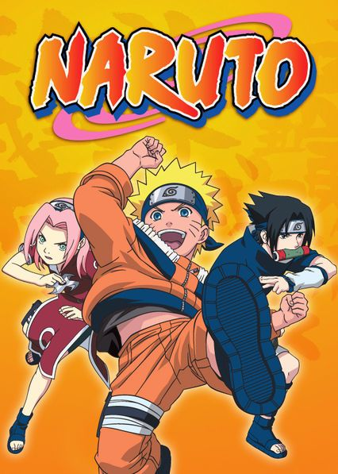
| Criador | Masashi Kishimoto |
|---|---|
| Lançamento | 3 de outubro de 2002 |
| Episódios | 220 episódios |
| Gênero | Ação, Aventura, Fantasia |
| Estúdio | Studio Pierrot |
Lançado originalmente em 2002 e baseado no mangá de Masashi Kishimoto, Naruto Clássico é a porta de entrada para um dos universos mais ricos e influentes da cultura pop. A história nos transporta para um mundo dividido em nações e vilas ocultas, onde os ninjas não são apenas mercenários, mas a principal força militar e política de seus países.
A narrativa foca na Vila Oculta da Folha (Konohagakure). Doze anos antes do início da série, a vila foi atacada por uma criatura lendária: a Raposa de Nove Caudas. Para salvar o povo, o Hokage selou a besta letal dentro de um bebê recém-nascido, o nosso protagonista Naruto Uzumaki.
Crescendo como um pária rejeitado pelos adultos, Naruto busca reconhecimento através de seu grande sonho: tornar-se o próximo Hokage, o líder supremo da Vila. A obra acompanha sua jornada de sobrevivência no mundo ninja cruel, lidando com missões de rank letal e o duro Exame Chūnin, provando que trabalho duro e laços de amizade podem mudar o destino de qualquer ninja.
Ao lado de seus companheiros do Time 7 — o frio e vingativo Sasuke Uchiha e a extremamente inteligente Sakura Haruno —, sob a tutela do lendário ninja copiador Kakashi Hatake, Naruto aprende o verdadeiro significado de lutar por quem se ama. A transição da infância para a dura realidade militar é marcada por perdas e pelo confronto de diferentes filosofias.
A série clássica se destaca por suas batalhas altamente estratégicas, onde o uso inteligente de Chakra através de Ninjutsu, Taijutsu e ilusões de Genjutsu definem o vencedor de cada embate. A constante ameaça de organizações criminosas e antagonistas icônicos, como o sádico Orochimaru, testa não apenas a força física, mas os limites e morais de toda a nova geração da Folha.
Selecione um personagem abaixo para visualizar seus detalhes baseados no Databook.
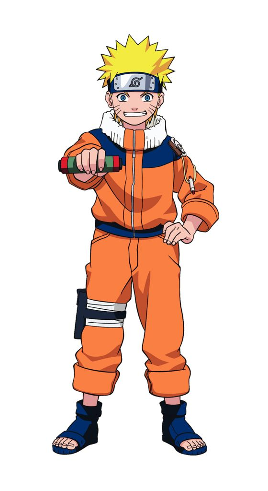
Naruto Uzumaki
| Vila de Origem | Konohagakure |
|---|---|
| Patente Ninja | Genin |
| Elementos | Vento |
| Estilo de Luta | Ninjutsu / Taijutsu |
O protagonista encrenqueiro de Konoha. Possui a Raposa de Nove Caudas selada em seu corpo, motivo pelo qual foi evitado na infância. Compensa a falta de talento inicial com chakra colossal e trabalho duro.
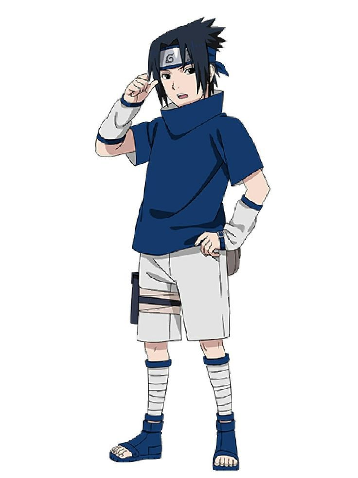
Sasuke Uchiha
| Vila de Origem | Konohagakure |
|---|---|
| Patente Ninja | Genin |
| Elementos | Fogo, Relâmpago |
| Estilo de Luta | Ninjutsu / Genjutsu |
| Kekkei Genkai | Sharingan |
Sobrevivente do massacre do Clã Uchiha, é um gênio impulsionado pelo desejo de vingança contra seu irmão Itachi. Abandona a vila em busca do poder de Orochimaru.
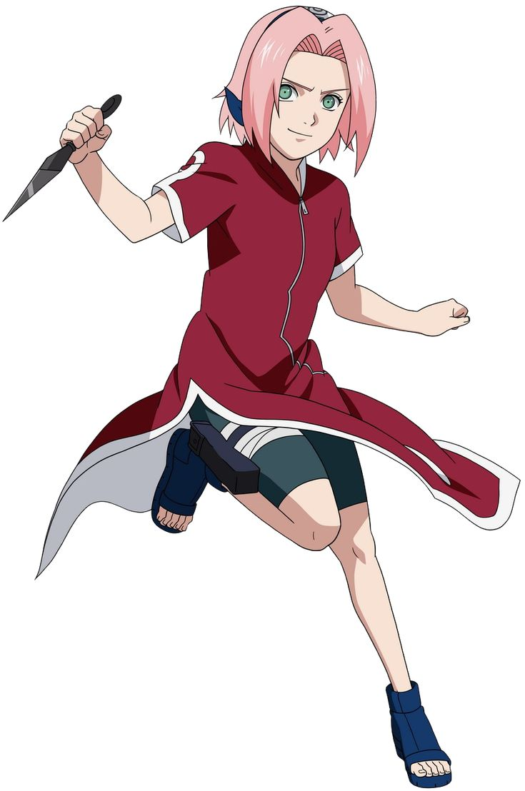
Sakura Haruno
| Vila de Origem | Konohagakure |
|---|---|
| Patente Ninja | Genin |
| Elementos | Terra, Água |
| Estilo de Luta | Iryō Ninjutsu |
Uma kunoichi extremamente inteligente com controle de chakra perfeito. Inicialmente focada apenas em romance, decide se tornar forte para parar de depender de seus colegas.
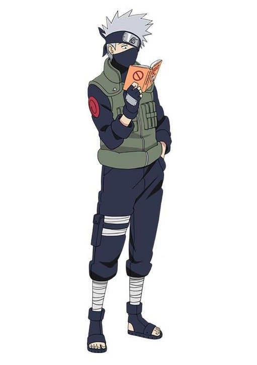
Kakashi Hatake
| Vila de Origem | Konohagakure |
|---|---|
| Patente Ninja | Jōnin |
| Elementos | Múltiplos Elementos |
| Estilo de Luta | Ninjutsu Versátil |
| Kekkei Genkai | Sharingan |
Conhecido mundialmente como o "Ninja Copiador". Um líder severo mas protetor que carrega o Sharingan de seu falecido amigo Obito no olho esquerdo.
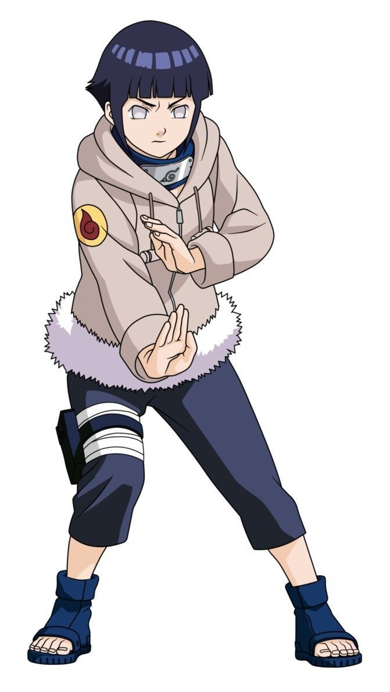
Hinata Hyuuga
| Vila de Origem | Konohagakure |
|---|---|
| Patente Ninja | Genin |
| Elementos | Fogo, Relâmpago |
| Estilo de Luta | Juuken (Punho Suave) |
| Kekkei Genkai | Byakugan |
A herdeira tímida da casa principal do Clã Hyuuga. Sofre com a falta de autoconfiança, mas encontra sua "vontade do fogo" observando a determinação de Naruto.
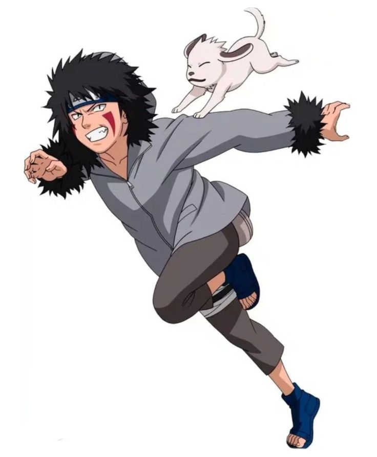
Kiba Inuzuka
| Vila de Origem | Konohagakure |
|---|---|
| Patente Ninja | Genin |
| Elementos | Terra, Yang |
| Estilo de Luta | Ninjutsu Cooperativo (Feras) |
Sempre acompanhado de seu fiel ninken (cão ninja) Akamaru. Kiba luta com instintos selvagens, sentidos aguçados e ataques físicos velozes.
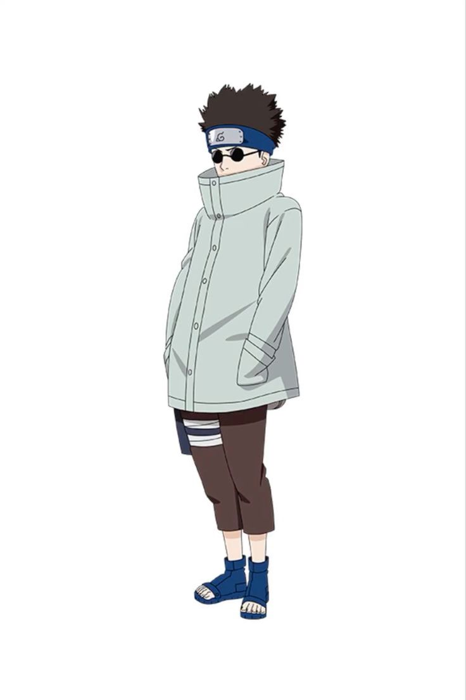
Shino Aburame
| Vila de Origem | Konohagakure |
|---|---|
| Patente Ninja | Genin |
| Elementos | Terra, Fogo, Yang |
| Estilo de Luta | Hijutsu (Controle de Insetos) |
Misterioso, estóico e analítico. Shino abriga milhares de kikaichū (insetos parasitas) em seu corpo, que usa para drenar chakra e rastrear inimigos silenciosamente.
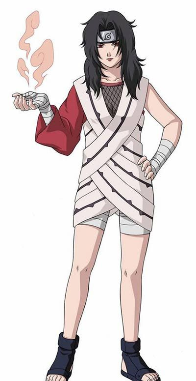
Kurenai Yuhi
| Vila de Origem | Konohagakure |
|---|---|
| Patente Ninja | Jōnin |
| Elementos | Terra, Água |
| Estilo de Luta | Genjutsu (Ilusão) |
Uma Jounin recém-promovida no Clássico, considerada a maior especialista em Genjutsu de Konoha. Atua como uma figura quase materna para Hinata.
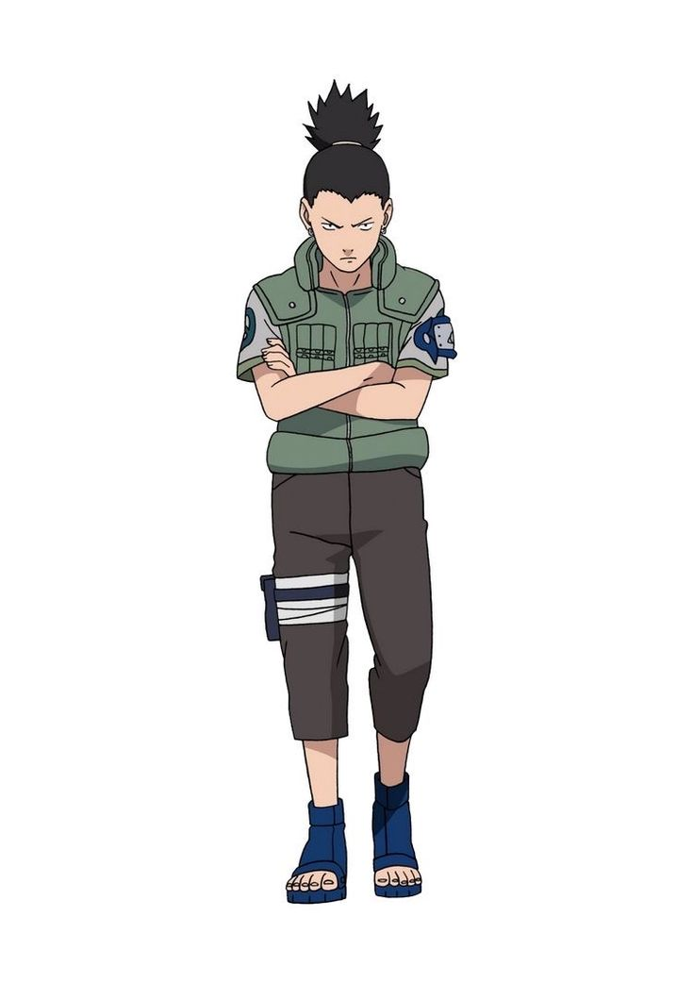
Shikamaru Nara
| Vila de Origem | Konohagakure |
|---|---|
| Patente Ninja | Chūnin |
| Elementos | Yin, Terra, Fogo |
| Estilo de Luta | Hiden (Manipulação de Sombras) |
O único Genin promovido a Chunin no Exame. Extremamente preguiçoso, mas possui um QI superior a 200, sendo o maior estrategista de sua geração.
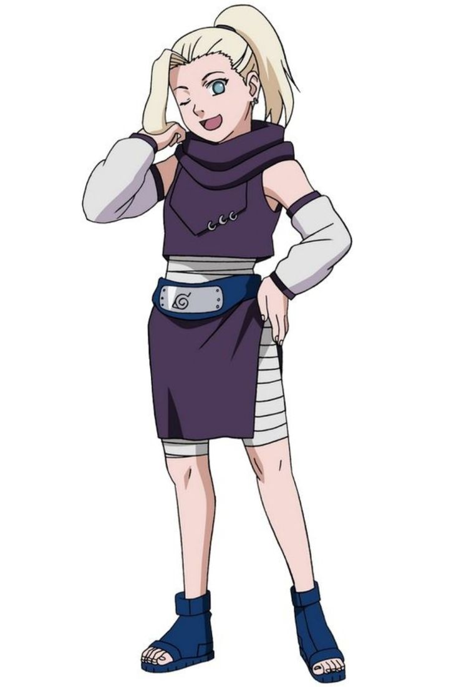
Ino Yamanaka
| Vila de Origem | Konohagakure |
|---|---|
| Patente Ninja | Genin |
| Elementos | Yin, Terra, Água |
| Estilo de Luta | Hiden (Técnicas Mentais) |
A vaidosa e sincera rival de Sakura. Especialista em inteligência e espionagem usando os jutsus mentais únicos de seu clã para possuir o corpo dos inimigos.
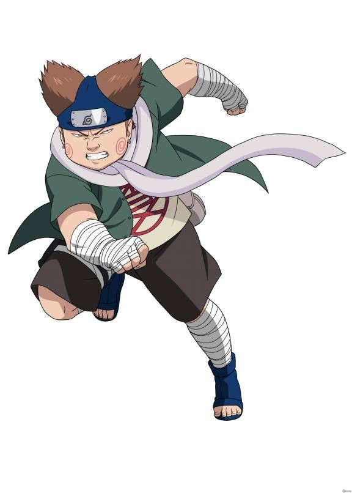
Choji Akimichi
| Vila de Origem | Konohagakure |
|---|---|
| Patente Ninja | Genin |
| Elementos | Yang, Terra, Fogo |
| Estilo de Luta | Hiden (Expansão Corporal) |
Gentil e apaixonado por comida. Fica furioso se chamado de "gordo". Pode converter calorias em chakra puro para multiplicar sua massa muscular e tamanho.
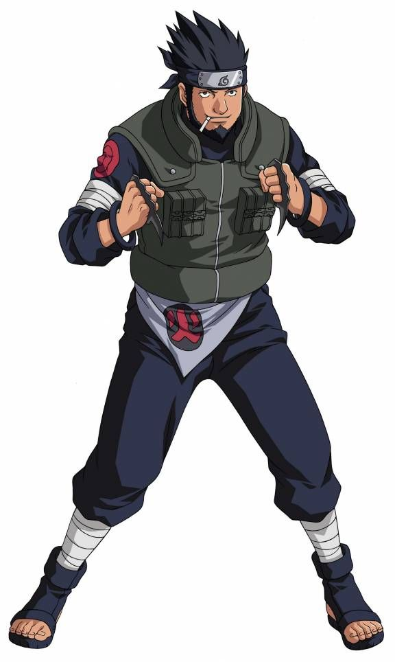
Asuma Sarutobi
| Vila de Origem | Konohagakure |
|---|---|
| Patente Ninja | Jōnin |
| Elementos | Vento, Fogo |
| Estilo de Luta | Bukijutsu (Facas de Trincheira) |
Filho do 3º Hokage. Um Jounin relaxado que fuma constantemente. Canaliza seu chakra elemental de vento em lâminas afiadas para combates de curto alcance.
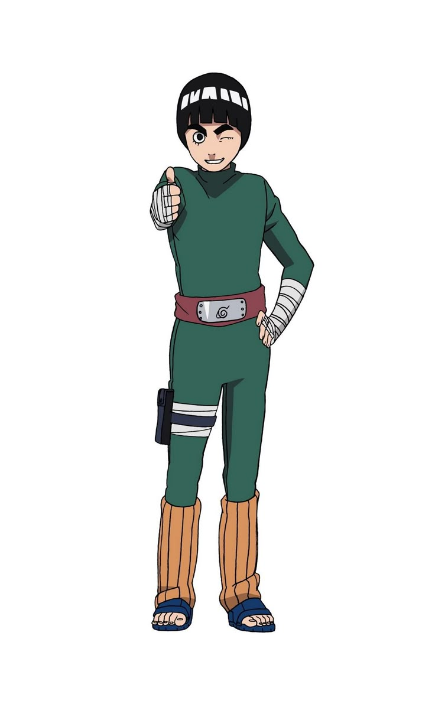
Rock Lee
| Vila de Origem | Konohagakure |
|---|---|
| Patente Ninja | Genin |
| Elementos | Nenhum |
| Estilo de Luta | Gōken / Taijutsu Puro |
Incapaz de usar Ninjutsu ou Genjutsu, Lee dedicou sua vida ao treinamento físico extenuante. A prova viva de que o trabalho duro pode superar o talento natural.
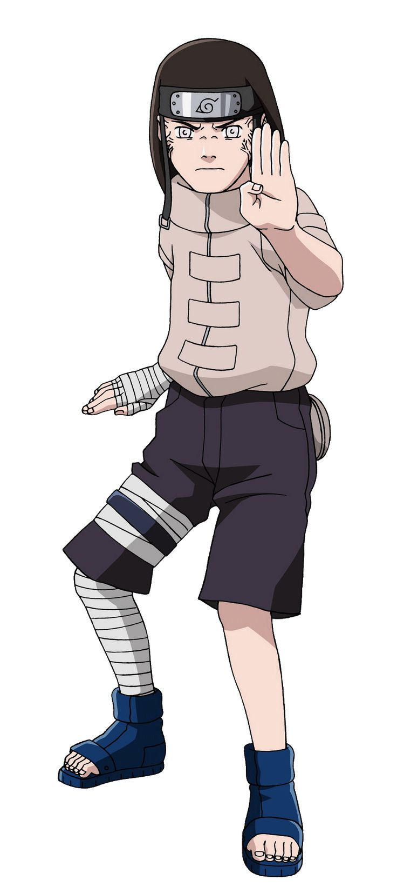
Neji Hyuuga
| Vila de Origem | Konohagakure |
|---|---|
| Patente Ninja | Genin |
| Elementos | Fogo, Água, Terra |
| Estilo de Luta | Juuken (Punho Suave) |
| Kekkei Genkai | Byakugan |
O maior prodígio do clã Hyuuga, nascido na casa secundária. Carregava grande ódio e acreditava no destino imutável até ser derrotado por Naruto.
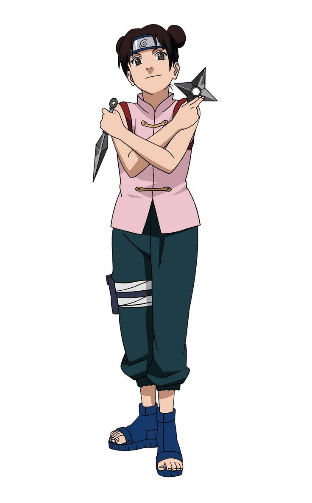
Tenten
| Vila de Origem | Konohagakure |
|---|---|
| Patente Ninja | Genin |
| Elementos | Nenhum Destacado |
| Estilo de Luta | Bukijutsu (Armas e Selos) |
Forte admiradora de Tsunade e especialista absoluta em armamento ninja. Carrega dezenas de pergaminhos capazes de invocar furacões de armas instantaneamente.
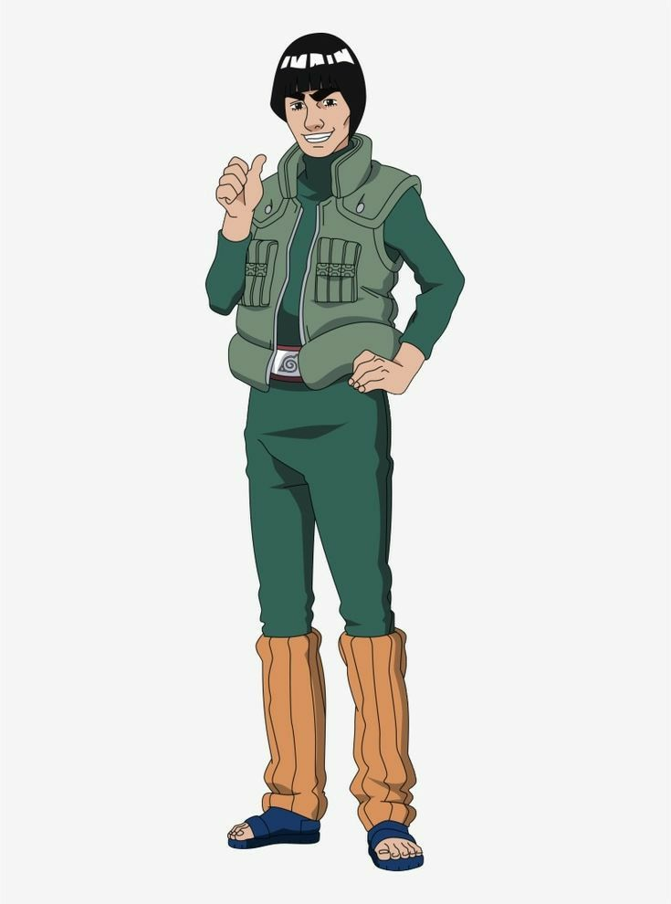
Might Guy
| Vila de Origem | Konohagakure |
|---|---|
| Patente Ninja | Jōnin |
| Elementos | Fogo, Relâmpago |
| Estilo de Luta | Taijutsu Extremo |
O mestre apaixonado da "Força da Juventude" e autoproclamado rival eterno de Kakashi. Ele ensinou a Lee tudo o que sabe sobre os Portões de Chakra e a "Força da Juventude".
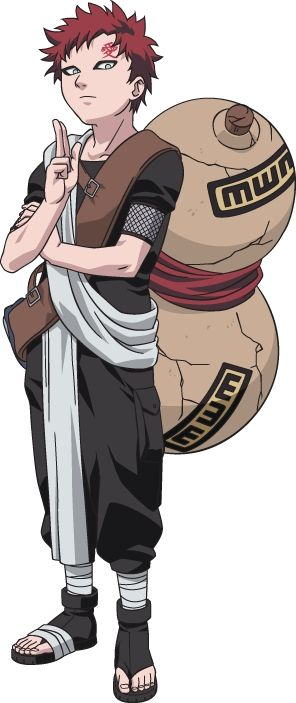
Gaara do Deserto
| Vila de Origem | Sunagakure |
|---|---|
| Patente Ninja | Genin |
| Elementos | Vento, Terra, Relâmpago |
| Estilo de Luta | Manipulação de Areia |
| Kekkei Genkai | Jiton (Magnetismo) |
Jinchuuriki de Shukaku. Cresceu como uma arma para sua vila, tornando-se um assassino frio e instável, até que Naruto mostra a ele o significado da compaixão.
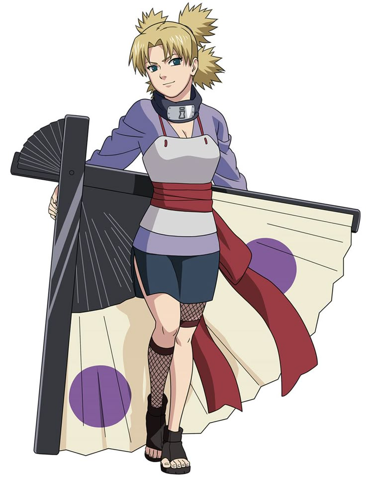
Temari
| Vila de Origem | Sunagakure |
|---|---|
| Patente Ninja | Genin |
| Elementos | Vento |
| Estilo de Luta | Tessenjutsu (Leque Gigante) |
A irmã mais velha e estratégica do trio da Areia. Utiliza um gigantesco leque de ferro para gerar rajadas de vento cortantes que devastam florestas inteiras.
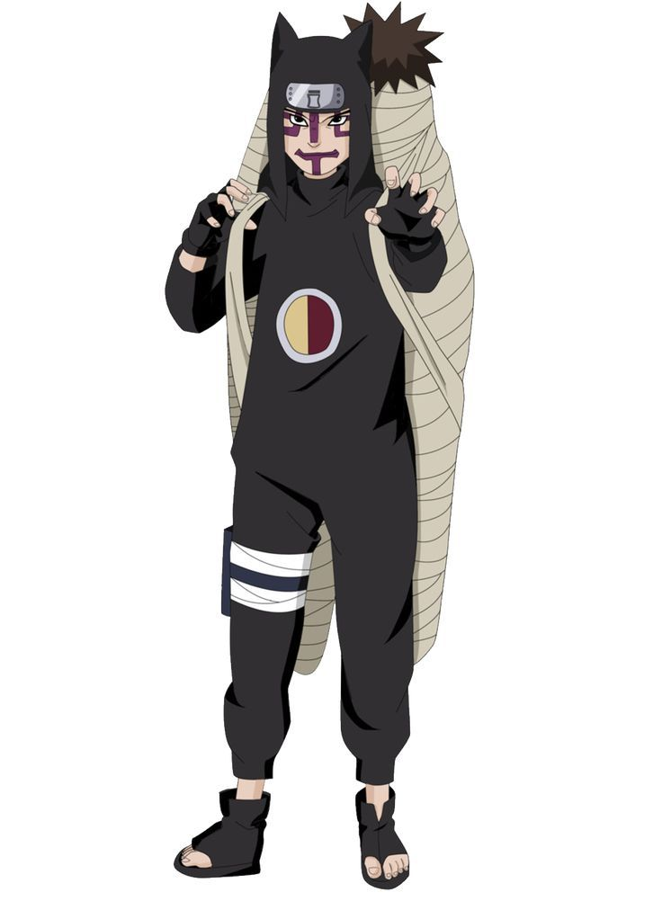
Kankuro
| Vila de Origem | Sunagakure |
|---|---|
| Patente Ninja | Genin |
| Elementos | Vento, Terra, Água |
| Estilo de Luta | Kugutsu (Marionetes) |
O irmão do meio, que detesta crianças. É um talentoso mestre de marionetes, usando fios de chakra para controlar bonecos repletos de lâminas e veneno letal.
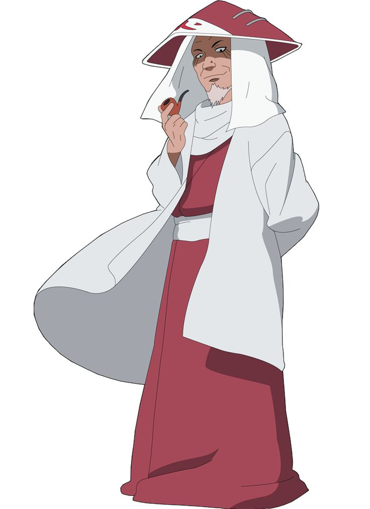
Hiruzen Sarutobi
| Vila de Origem | Konohagakure |
|---|---|
| Patente Ninja | 3º Hokage |
| Elementos | Todos os Básicos |
| Estilo de Luta | Maestria Total de Ninjutsu |
Conhecido como o "Professor" e "Deus Shinobi" de sua era. Liderou Konoha com amor e sabedoria, dominando todas as naturezas de chakra da vila.
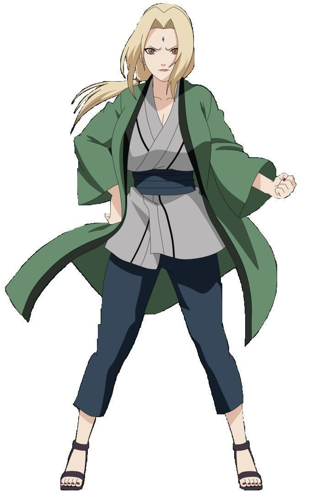
Tsunade Senju
| Vila de Origem | Konohagakure |
|---|---|
| Patente Ninja | 5ª Hokage |
| Elementos | Relâmpago, Terra, Água, Fogo |
| Estilo de Luta | Iryō Ninjutsu / Força Monstruosa |
A maior ninja médica do mundo e a kunoichi mais forte de sua geração. Conhecida por seu pavio curto, força devastadora e vício crônico em apostas.
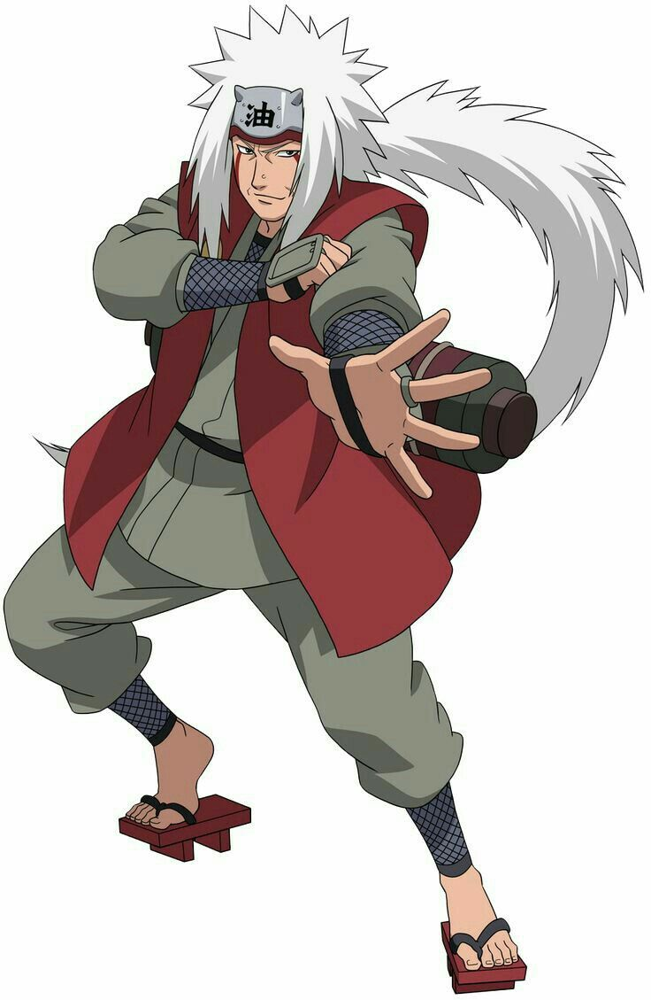
Jiraiya
| Vila de Origem | Konohagakure |
|---|---|
| Patente Ninja | Sannin |
| Elementos | Fogo, Terra, Água, Vento |
| Estilo de Luta | Senjutsu / Fūinjutsu |
O Eremita dos Sapos. Um viajante despreocupado e escritor de romances maduros, que se torna a figura paterna e o mestre mais importante na vida de Naruto.
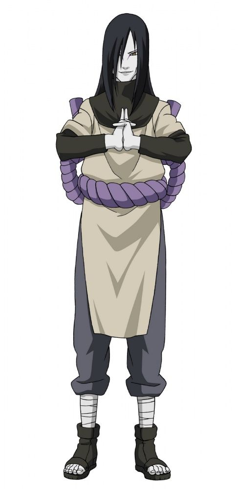
Orochimaru
| Vila de Origem | Otogakure (Ex-Konoha) |
|---|---|
| Patente Ninja | Sannin (Nukenin) |
| Elementos | Vento, Raio, Terra, Água, Fogo |
| Estilo de Luta | Kinjutsu (Jutsus Proibidos) |
O cientista sádico expulso de Konoha. Obcecado pela imortalidade e por aprender todos os jutsus do mundo. Manipula Sasuke e invade Konoha para matar seu ex-mestre.
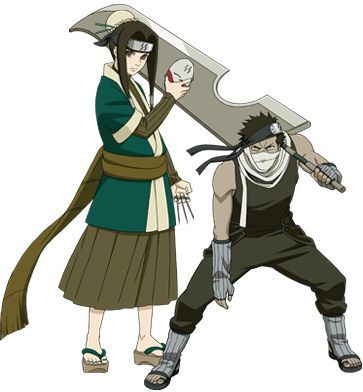
Zabuza & Haku
| Vila de Origem | Kirigakure (Névoa) |
|---|---|
| Patente Ninja | Nukenin (Ex-Anbu) |
| Elementos | Água (Zabuza) / Gelo (Haku) |
| Estilo de Luta | Kenjutsu / Assassinato Silencioso |
| Kekkei Genkai | Hyōton (Gelo - Haku) |
Os primeiros grandes inimigos do Time 7. Zabuza, o Demônio da Névoa Oculta, e Haku, um jovem leal com a linhagem de gelo. Encontram a humanidade na morte.
Arco do País das Ondas
Primeira missão real do Time 7, enfrentando os letais ninjas da Névoa, Zabuza e Haku.
Exame Chunin
Genins do mundo inteiro se reúnem em testes mortais, enquanto Orochimaru espreita nas sombras.
Invasão de Konoha
O ataque planejado por Orochimaru acontece, culminando na batalha entre ele e o Terceiro Hokage.
Busca por Tsunade
Naruto aprende o Rasengan viajando com Jiraiya para convencer Tsunade a se tornar a nova Hokage.
Resgate de Sasuke
Os Genins de Konoha partem em uma missão desesperada para impedir Sasuke de se juntar a Orochimaru no Vale do Fim.
🍃 Vila da Folha
Konohagakure. Vila principal da série, governada pelo Hokage. Considerada a mais forte do mundo.
🏜️ Vila da Areia
Sunagakure. Aliada instável de Konoha, lar de Gaara e comandada pelo Kazekage.
⚡ Chakra
Energia vital moldada para usar jutsus. Uma mistura de energia física com espiritual.
🌀 Jutsus
Técnicas ninjas divididas em Ninjutsu (elementos), Genjutsu (ilusão) e Taijutsu (corpo a corpo).
🐸 Sannins Lendários
O trio mais poderoso da história de Konoha: Tsunade, Jiraiya e Orochimaru.
📜 Exame Chunin
Testes de sobrevivência cruéis feitos para avaliar e promover ninjas de baixo rank a líderes de esquadrão.
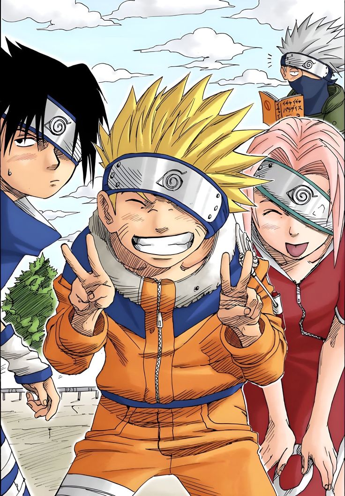
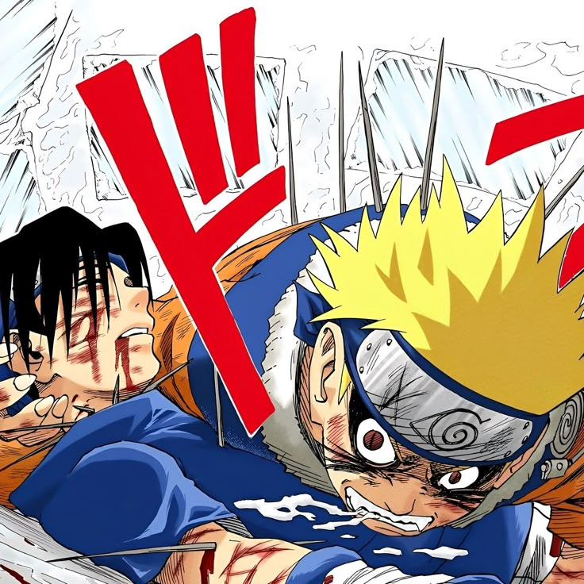
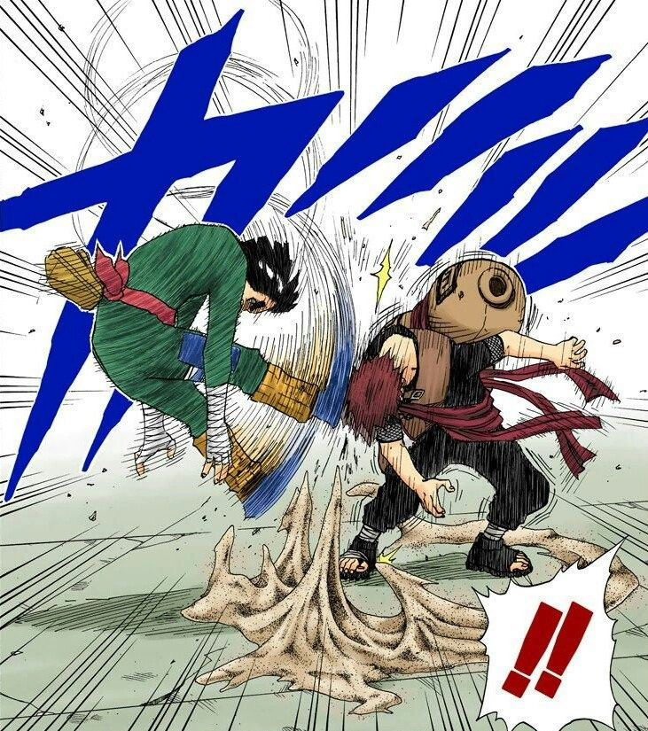
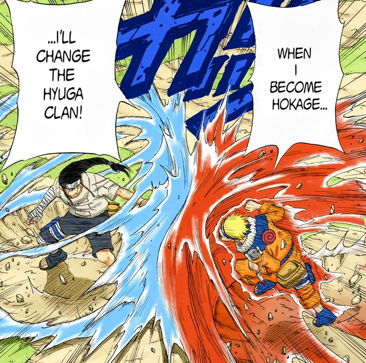
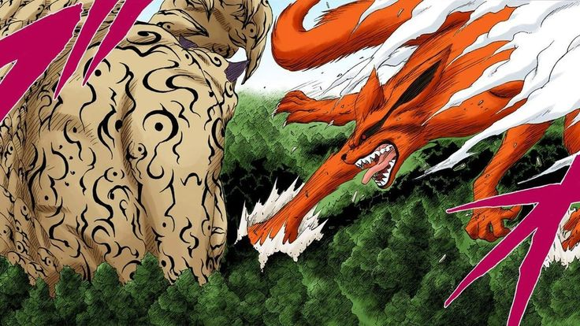
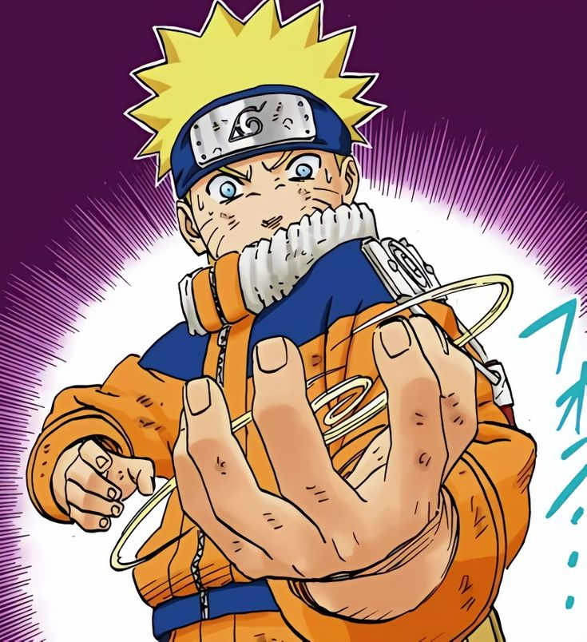
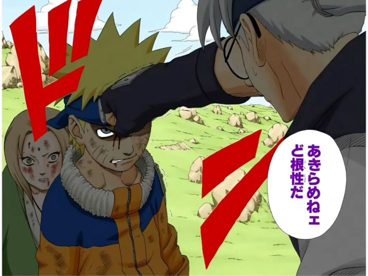
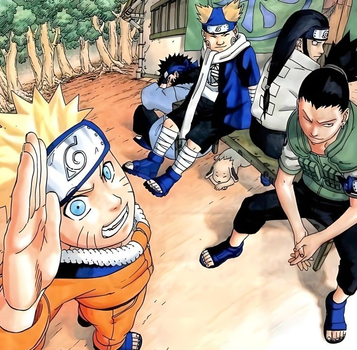
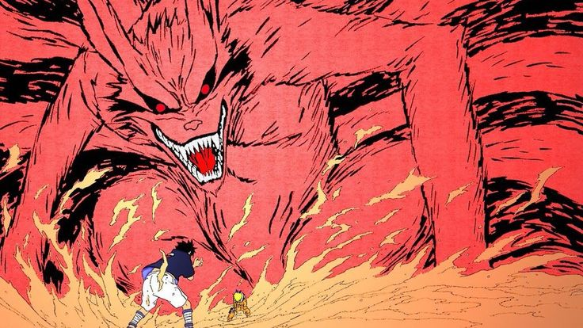
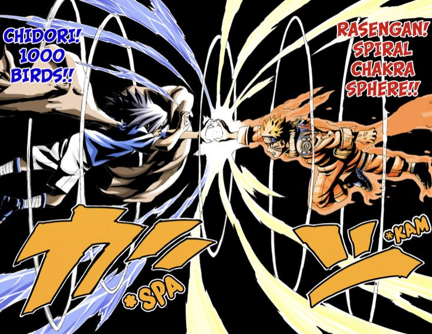